文|圆圈妈，一个文思如尿崩的双胎妈妈
图|来自网络，如有侵权，请联系删除
· 正 · 文 · 来 · 啦 ·
截至今日，我们家的7座车福特锐界的车贷终于还清了，说说这两年来，我与7座车的那些"剪不断，理还乱。
【01】
为什么考虑7座车
有以下7个原因：
①家庭常住人口较多，6口人，若5座车上放两个安全座椅，必定有1人只能绑在行李架上。于是，7座车是唯一选择。我想，这也是很多人选择7座车的初衷，无非就是图7座车装的人多。
②我就是传说中拿了驾照垫桌脚的那种人，要是家有两部车，必定有一部车会被压箱底！此外，家长两位长老也不会开车，甚至连打车也不会。
③俩娃娃小，屁事多，队友负责开车，我一人伺候俩，恐怕办不到，若两人同时哭，同时要拉屎拉尿…因此，出行必须把公公婆婆带上。
④与人口众多成正比的是行李好多，俩娃+4个大人的行李，每次出门都有行军打仗的赶脚…没有7座车，寸步难行！
⑥喜欢带上一家老小自驾游，一家人一块出去玩的几率较高，唯有行驶稳定、综合性能高的7座车才能装得下行李，装得下家人，装得下远方。
⑦深圳的交通发达，我们都不打算开车通勤，在市区内开车的情况较少，而且深圳停车难，收费高，若是开两部5座车出去，真的宁愿坐公交车也不想耗在找停车位上。
【02】
7座车VS安全座椅
锐界是2+3+2模式，安全座椅有两个放置方案。
方案一：放在第二排的左右两侧，我坐中间
✅优点：都能兼顾到俩娃合理和不合理的需求，中间隔着我，可避免一些无意义的争抢。
❎缺点：因为被隔开，俩娃的互动为0，坐第三排的人无法正常进出，需要把其中一边的安全座椅拆掉才行，一次，两次没问题，但频繁拆卸，安装，真的非常烦！
有时为了省事，大家都默认从后车厢爬上去，爬下来，摔个狗吃屎，也是常有的事。
有次后车厢被行李堵住了，又懒得拆，我只好….从天窗爬出去了！
顺便吐槽下第二排的中间位置：
▲求圆圈妈妈の心理阴影面积▲
卡在中间，相当尴尬……窄得让人心塞！
高的、胖的、腿长的人都坐不了……关键是座位比较硬！一趟超过4小时的长途车下来，后遗症是屁股痛，坐骨神经痛，关节痛…
我想，今时今日，我还能在110斤左右徘徊，真的多亏了中间位置的“威逼利诱”！
方案二：第二排和第三排各放一个座椅
✅优点：方便坐第三排的人上下车。
❎缺点：无法同时兼顾两个娃，不管是坐第二排还是第三排，我只能坐在其中一个娃的边上，若俩娃都希望我坐在他们旁边， “抢妈妈”大战即将拉开帷幕…
【03】
为什么要买两个安全座椅
我买七座车的一个重要考虑因素是，保证有地儿放两个安全座椅，而不影响正常使用，虽然不希望有撞的那天，但防患于未然，把伤害降到最低是必须的。
家庭用车标配安全座椅是常识！常识！常识！
毕竟在车里面，臂膀再有力也比不上安全座椅的保护，除了是安全考虑，更重要的是解放双手。
迄今为止，安全座椅一直被我视为养育双胞胎最靠谱的育儿神器之一。
现在四人出行，队友开车，我们娘仨坐第二排，我就把他们固定在座位上，不用担心他们会把身体探出车窗外，四处乱窜，乱按…不用担心被交警逮到罚钱扣分，不用担心一个急刹车，我该保护谁…
反正，他们在座椅上很安全，我也很放心。
即便同时哭闹，我也很淡定，解放出来的双手可以做很多事情去安抚他们：讲故事，拿零食，看iPad…
强烈建议：拒绝侥幸心理，不管什么原因，只要车在行驶中，大人都不要把孩子们抱在怀里！尤其是俩娃稍大一点后，大人根本抱不住两只熊孩子，把他们固定在安全座椅上其实是最省心省力的事情了。
给你阳光灿烂的机会，为何不呢？
【04】
如何让孩子们坐在安全座椅上不哭闹
有些家长会担心孩子不肯坐安全座椅，于是干脆就不买，或者只买一个试试看。
我家的情况是这样的。
我们买锐界时，圆圈已经2岁了，在这之前都没有使用过安全座椅，平时打车或者坐私家车都是抱在手上，跟大人一起绑在安全带。
我曾经也很担忧他们坐在安全座椅上会反抗，会哭闹！但实际结果让人很受宠若惊！
他们非常喜欢自己的专属座位，坐在座椅上，从不哭闹，上车后就很自觉地扣上安全带！有时候人多坐不下，不得不拆掉他们的座椅，还会跟我们急！
据妈妈群收集到的经验，经过总结，大致有3招可以让双胞胎孩子乖乖坐在安全座椅上：
刚出生就用安全提篮，让他们适应坐在车上被固定住的感觉，然后逐渐过渡到安全座椅。
养成上车就睡觉的习惯，这需要考虑俩娃的作息规律，需巧妙安排好！
来点适当诱惑，比如坐在座椅上，可以吃点小饼干，听故事，看会儿动画片…
【04】
我与7座车的小疙瘩
①谈不上空间大，更没有舒适度可言
7座车满座后会感觉很压抑，一车都是人，尤其是坐在后排的人，会很憋屈，若是胖子或者大长腿美女，压根没法坐。
因为左右侧均有安全座椅，每次上下车，只能弓着身子，低着头，爬进去，跳下来…动作非常猥琐，感觉像钻猪笼，舒适度为0.
②前面提到的安全座椅问题
7座车上塞了两个安全座椅，很占空间，相当于坐了两个200多斤重的壮汉，而且总是要拆来拆去，让人极度烦躁。
③满载后，根本没地儿放行李
传说中的“7座车对行李很友好”，其实都是纸上谈兵，反正我们经常把放三脚架的地方腾出来塞行李，若后排不坐人，行李就有位置放，但好像跟五座车又没区别了……
④不享受6年免检，车价高、保费贵、养车成本高…
这些就不说了！这是7座车的硬伤，也没啥好说的！鸡都买了，不差那点酱油钱！
【05】
已经有两部5座车的双胞胎家庭怎么办？
卖掉一个5座车换7座车呗！
且慢！
我给你一个不用换7座车的理由：将错就错！见招拆招！
7座车的使用率不高是事实，满载的情况也相对较少，尤其是等俩娃大一点了，行李物品没那么多，基本上后面的座位就很鸡肋了。
若你经常开车上班，那更没有必要换，除非你跟加油站有战略合作关系。
出门人少就开一辆车，人多就开两辆，不管小两口各自开一辆，还是与老人家各开一辆，都皆大欢喜，人人都有位置坐，不必太压抑。
讲真，我有时候很后悔为何当初不买5座车。
尤其是只有我们四人出行，行李又很少的时候，一想到7座车那么耗油，后排多出来的两个座位，坐又太挤，不坐又浪费，哎，心里就淌血！（这是马后炮...）
【06】
哪些7座车适合双胞胎家庭
经济基础决定上层建筑。
买什么品牌，什么价位，问钱袋子便是，所有的纠结都是浪费表情。
我的意见是，除了锐界别买，其他7座车均可考虑。
因为踩了锐界的坑，所以真心不建议！尤其是家有新手司机刚上路，且个子小，力气不够大的宝妈，个人感觉，开锐界就好像开拖拉机一样，感觉很笨重，不听使唤，猛踩油门都跑不动…
我永远无法忘记，第一次走水官高速，经过很多辆大货车，我踩油门的脚啊，一直在抖，腿毛都掉了一地！从此，再也不敢开车！
推荐夏朗，简直是专为双胞胎家庭设计的！
因为夏朗的第二排座椅有三个安全座椅接口，也就是说，大人再也不用挤在中间，腿不能伸，屁股只能做半边，身子只能打侧…
把安全座椅放在一侧和中间座椅上，他们坐在一起也能互动玩耍，旅途不寂寞！靠另一边的座椅可随时放倒，方便坐第三排的人进出，同时也能照顾到两个孩子。
【07】总结
如果你是4口之家，很少满载5人，常在市区使用，偏少人短途出行，而且你或者队友均有1对2的带娃本领，可以考虑5座车。
如果你是5口之家，经常满载5人，常在市区使用，偏少人短途出行，行李不多，而且除司机外，另外两人其中一人不是胖子，也可以考虑5座车。
如果你是6口之家，很少满载5人，常在市区使用或开车通勤，偶尔周边自驾游，但行李多又杂，没有1对2的带娃绝招，若有两人会开车，又不差钱，可考虑买两个5座车。
如果你是6口之家，常满载出游，常跑高速，偏多人长途出行，俩娃在2岁以内，行李多又杂，只有一人会开车，选7座车吧！别犹豫了！
如果你是6口之家以上…这还用问吗？买中巴吧！
如果以上情况都不是，问人民币即可！
总之，双胞胎家庭在买7座车之前，一定要搞清楚自己的实际用车需求，小两口也要互相提醒，互相按住对方的买车冲动，好好商量，一切从长计议啊！
-END-
今日互动话题
#你家买7座车了吗？后悔不？#
评论区聊一聊
说出你的想法吧
一好文推荐一
一加入社群一
一关注孖仔帮一
点击“阅读原文”，直达双胞胎育儿网站www.sgguy.com.
觉得7座车靠谱吗？请点“在看”

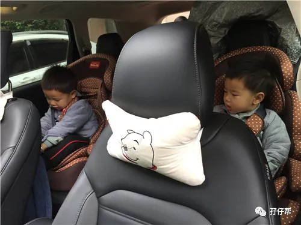
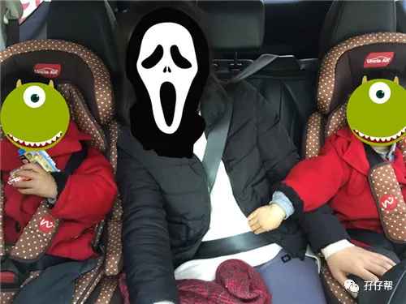
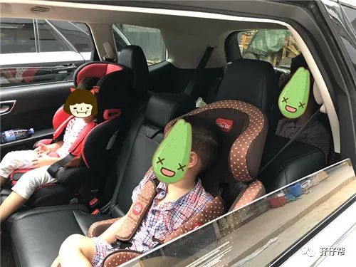
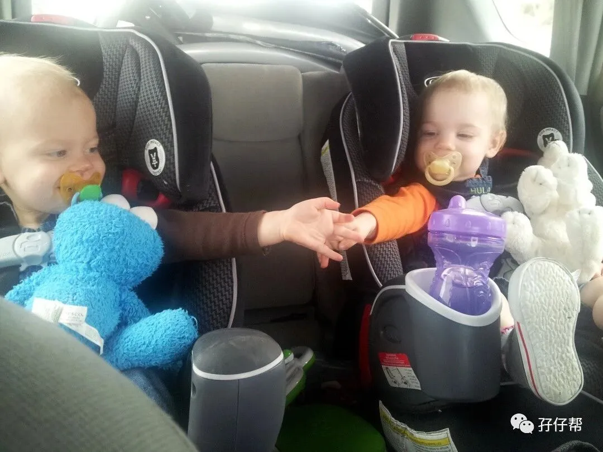
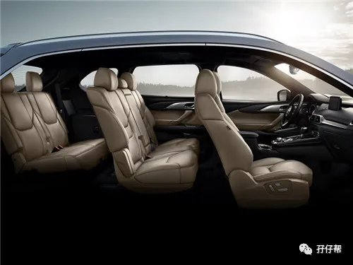
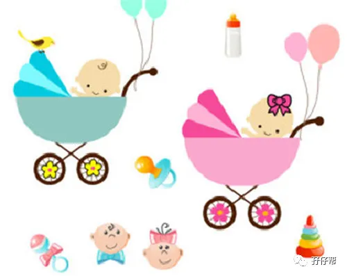
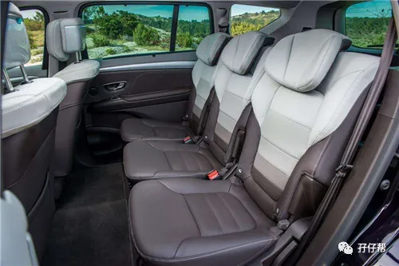
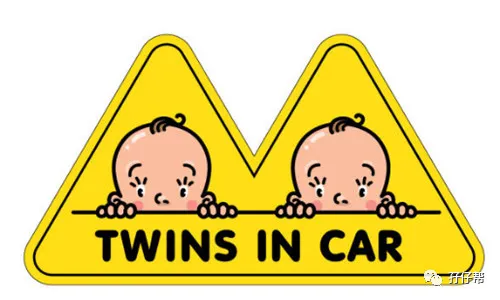
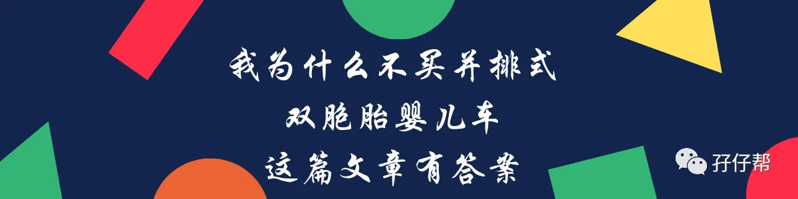
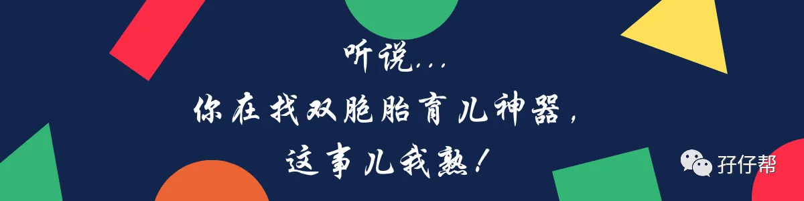
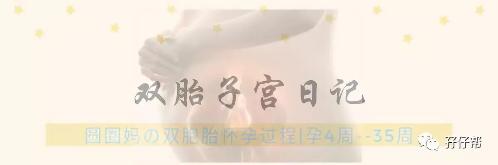
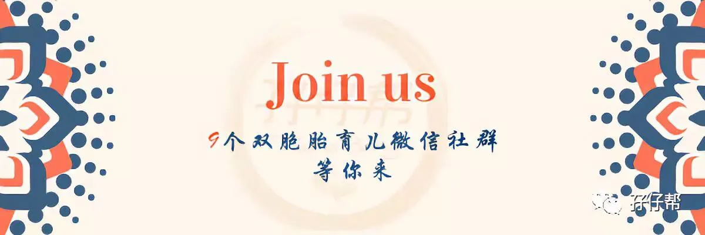

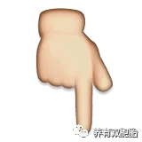